Linear Regression with Stata
Fall 2016
Josh Quan - joshua.quan@tufts.edu
Tisch Library
Goals for the Hour
- (brief) Introduction to the Stata Interface
- 2 Examples of Linear Regression
- Exporting Regression Tables
- Where to get help
Preliminaries
tinyurl.com/tischstata
Open Stata: Windows -> Data & Statistical Applications -> Stata 14
In Stata: File -> Change Working Directory...
The Stata Interface
- Command Line
- Review
- Output/Results
- Variables
- Properties
Stata Workflow
Highly recommended to keep a do/log file of your sessions
- do file = a script of your syntax that can be executed
- log file = record of your output
Tidy Data = Happy Data
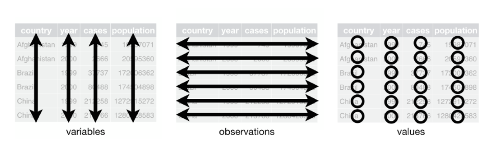
Tidy Data = Happy Data
How Many Variables?
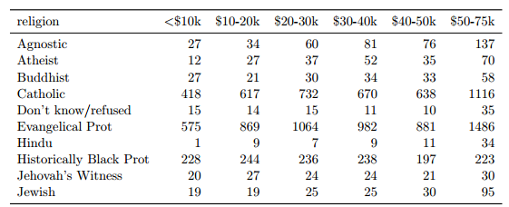
Tidy Data = Happy Data
How Many Variables?
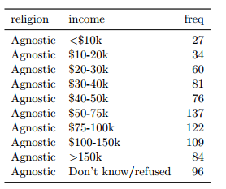
Tidy Data = Happy Data
Linear Regression
Linear Regression
Life Expectancy Dataset
Six Variables: region, country, popgrowth, lexp, gnppc, safewater
/* this is a comment, does not run */
use lifeexp.dta
Life Expectancy Dataset
/* basic information about data types */
describe
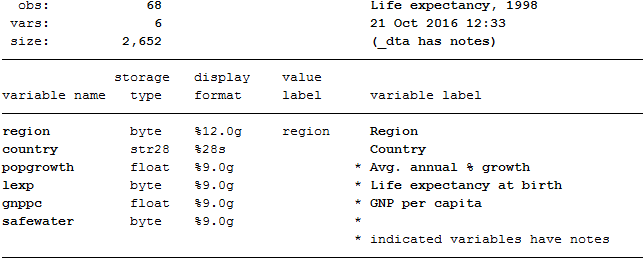
Life Expectancy Dataset
/* basic descriptive statistics about our dataset */
summarize
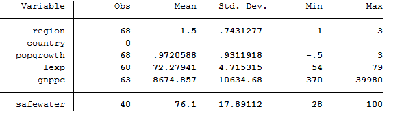
Life Expectancy Dataset
browse
Why are values different colors?
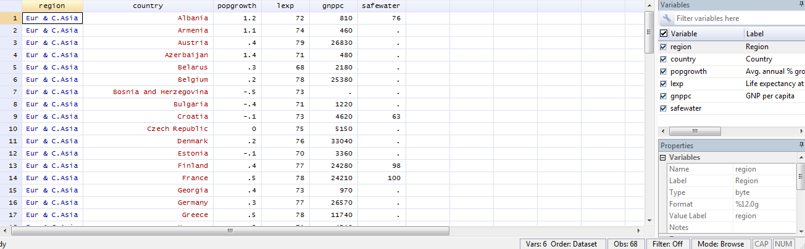
Life Expectancy Dataset
Matrix plots
graph matrix lexp safewater gnppc popgrowth
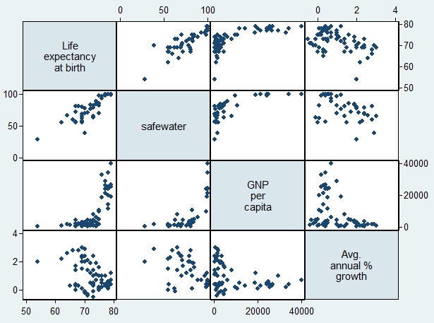
Life Expectancy Dataset
regress y x
regress lexp safewater
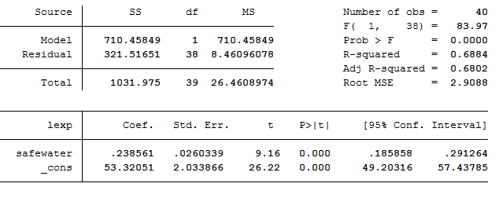
Life Expectancy Dataset
regress y x
regress lexp safewater

Life Expectancy Dataset
regress y x
regress lexp safewater
- Each 1 unit increase in safewater estimates a .238 change in life expectancy
Life Expectancy Dataset
scatter plot with fit line
twoway scatter lexp safewater || lfit lexp safewater
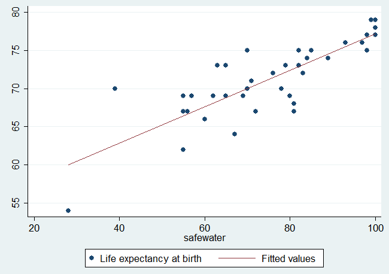
Heights Dataset
clear
use heights.dta
summarize
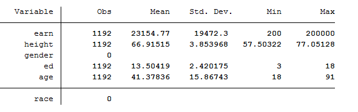
Heights Dataset
six variables: earn, height, gender, ed, age, race
Is there a significant relationship between height and salary?
regress earn height
Interpret the output on your own or with a neighbor
Heights Dataset
Is there a significant relationship between height and salary?
regress earn height
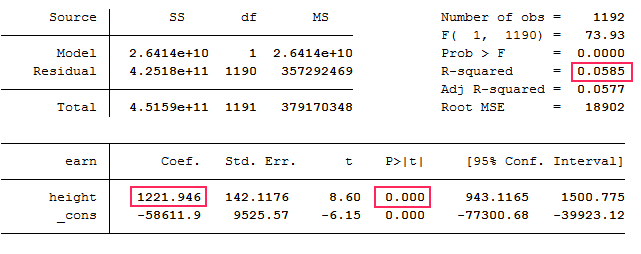
- - each 1 unit increase in height estimates a 1,222 increase in earnings
Heights Dataset
Multiple Regression
regress earn height ed
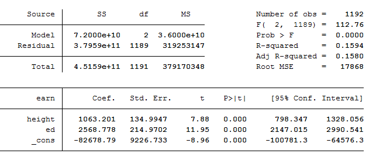
what happens to our coefficients when we add variables to the model?
Heights Dataset
Multiple Regression with a Categorical Variable
regress earn height ed gender
- 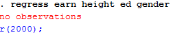
Heights Dataset
Multiple Regression with a Categorical Variable
/*one way to create a dummy variable*/
gen female = (gender == "female")
/*and another*/
gen female = 0
replace female = 1 if gender == "female"
/*yet another*/
xi: regress earn i.gender
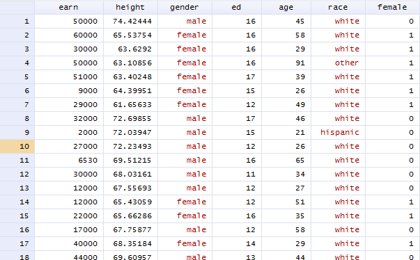
Heights Dataset
Multiple Regression with a Categorical Variable
regress earn height ed female
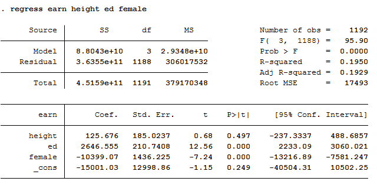
Exporting Results
outreg2
outreg2 using model.doc
regress earn height
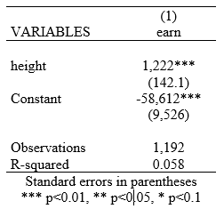
Exporting Results
outreg2
regress earn height ed age
outreg2 using model.doc, append
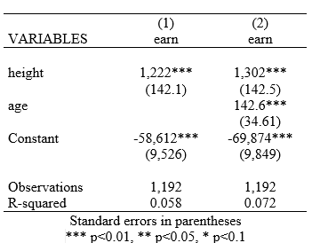
Next Steps
- Regression Diagnostics
- Hierarchical Models (ANOVA)
- Non-Linear or Non-parametric Models
Getting Help
- In Stata
help regress
- Learning Resources